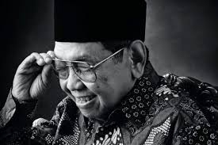
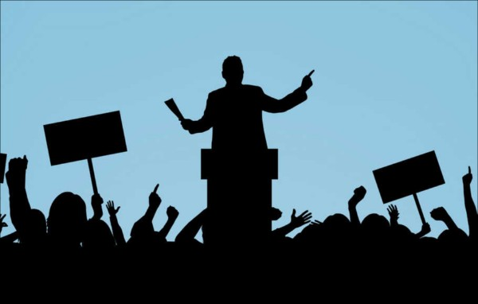
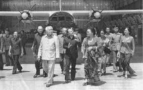

Latar Belakang
 Abdurrahman Wahid, lebih dikenal dengan sebutan Gus Dur, lahir pada 7 September 1940 di Jombang, Jawa Timur. Ia merupakan tokoh penting dalam sejarah politik dan keagamaan Indonesia, menjabat sebagai Presiden keempat Republik Indonesia dari 20 Oktober 1999 hingga 23 Juli 2001. Gus Dur adalah putra dari KH Wahid Hasyim, seorang menteri agama dan pendiri Nahdlatul Ulama (NU), organisasi Islam terbesar di Indonesia, serta cucu dari Hadratus Syeikh Hasyim Asy'ari, pendiri NU.
Abdurrahman Wahid, lebih dikenal dengan sebutan Gus Dur, lahir pada 7 September 1940 di Jombang, Jawa Timur. Ia merupakan tokoh penting dalam sejarah politik dan keagamaan Indonesia, menjabat sebagai Presiden keempat Republik Indonesia dari 20 Oktober 1999 hingga 23 Juli 2001. Gus Dur adalah putra dari KH Wahid Hasyim, seorang menteri agama dan pendiri Nahdlatul Ulama (NU), organisasi Islam terbesar di Indonesia, serta cucu dari Hadratus Syeikh Hasyim Asy'ari, pendiri NU.
Gus Dur dibesarkan dalam lingkungan keluarga yang sangat religius. Sejak kecil, ia dididik dalam tradisi pesantren dan memiliki akses ke pendidikan formal yang lebih luas. Ia menempuh pendidikan di Sekolah Rakyat dan kemudian melanjutkan ke Yogyakarta untuk belajar di berbagai pesantren terkemuka. Gus Dur juga sempat belajar di Universitas Al-Azhar di Kairo, Mesir, di mana ia mendalami ilmu keislaman.
Setelah kembali ke Indonesia, Gus Dur aktif dalam Nahdlatul Ulama dan menjadi Ketua Umum NU pada tahun 1984. Di bawah kepemimpinannya, NU mengedepankan prinsip moderasi dan toleransi dalam Islam. Gus Dur juga dikenal sebagai kritikus tajam terhadap rezim Orde Baru yang dipimpin oleh Soeharto, berperan aktif dalam gerakan reformasi yang mengarah pada jatuhnya pemerintahan tersebut pada tahun 1998.
Gus Dur terpilih sebagai presiden setelah pemilu tahun 1999, saat Indonesia memasuki era reformasi. Selama masa jabatannya, ia menghadapi berbagai tantangan, termasuk konflik etnis dan masalah ekonomi. Meskipun kepemimpinannya hanya berlangsung selama kurang lebih dua tahun, Gus Dur dikenal karena upayanya dalam mempromosikan hak asasi manusia dan toleransi antarumat beragama.
Tujuan

Gus Dur, atau K.H. Abdurrahman Wahid, memiliki beberapa tujuan utama dalam perjuangannya di Indonesia:
1.Memperkuat demokrasi dan reformasi
Gus Dur berperan penting dalam mendorong reformasi dan demokratisasi di Indonesia pasca era Orde Baru. Sebagai Presiden RI ke-4, ia berupaya menegakkan prinsip-prinsip demokrasi dan kebebasan sipil.
2.Mempromosikan toleransi dan pluralisme
Gus Dur secara konsisten memperjuangkan toleransi antarumat beragama dan menghormati keberagaman di Indonesia. Ia membela hak-hak kelompok minoritas dan mendukung dialog antaragama.
3.Mewujudkan keadilan sosial
Gus Dur mendorong reforma agraria dan pengelolaan sumber daya alam yang lebih adil. Ia juga mengkritik perampasan tanah rakyat dan berupaya mengembalikannya.
4.Memperkuat maritim Indonesia
Sebagai presiden, Gus Dur membentuk Departemen Eksplorasi Laut (cikal bakal Kementerian Kelautan dan Perikanan) untuk memperkuat sektor maritim Indonesia.
5.Menegakkan supremasi sipil
Gus Dur berupaya mereformasi militer dan menegakkan supremasi sipil atas militer, termasuk dengan mengangkat menteri pertahanan sipil.
6.Memperjuangkan kebebasan pers
Gus Dur membubarkan Departemen Penerangan untuk mendukung kebebasan pers di Indonesia.
Itulah beberapa tujuan utama gus dur dalam membangun bangsa Indonesia
Plaksanaan di semua bidang
berikut pelaksanaan Gus Dur di berbagai bidang selama masa kepresidenannya
Bidang Politik

1.Memperkuat demokrasi dan reformasi pasca era Orde Baru.
2.Menegakkan supremasi sipil atas militer, termasuk mengangkat menteri pertahanan dari kalangan sipil.
3.Membubarkan Departemen Penerangan untuk mendukung kebebasan pers.
4.Membuka ruang kontroversi dengan memberi kebebasan menyampaikan aspirasi, termasuk keinginan merdeka di Papua.
Bidang Ekonomi

1.Mendorong reforma agraria dan pengelolaan sumber daya alam yang lebih adil.
2.Membentuk Departemen Eksplorasi Laut (cikal bakal Kementerian Kelautan dan Perikanan) untuk memperkuat sektor maritim.
3.Mengupayakan pengembalian tanah rakyat yang dirampas, termasuk 40% tanah PTPN.
Bidang Keamanan
1.Pendekatan Inklusif: Gus Dur berusaha untuk mendamaikan berbagai kelompok yang berbeda di Indonesia, termasuk etnis dan agama. Ia percaya bahwa keamanan tidak hanya ditentukan oleh kekuatan militer, tetapi juga oleh keadilan sosial dan pengakuan terhadap hak asasi manusia.
2.Penyelesaian Konflik: Selama masa kepresidenannya, Gus Dur mengambil langkah-langkah untuk menyelesaikan konflik di beberapa daerah, seperti Aceh dan Papua. Ia berusaha untuk mengadakan dialog dengan kelompok-kelompok yang berkonflik, meskipun tidak selalu berhasil.
Prestasi Gus Dur

berikut pelaksanaan Gus Dur di berbagai bidang selama masa kepresidenannya
1.Pendekatan Inklusif: Gus Dur berusaha untuk mendamaikan berbagai kelompok yang berbeda di Indonesia, termasuk etnis dan agama. Ia percaya bahwa keamanan tidak hanya ditentukan oleh kekuatan militer, tetapi juga oleh keadilan sosial dan pengakuan terhadap hak asasi manusia.
2.Penyelesaian Konflik: Selama masa kepresidenannya, Gus Dur mengambil langkah-langkah untuk menyelesaikan konflik di beberapa daerah, seperti Aceh dan Papua. Ia berusaha untuk mengadakan dialog dengan kelompok-kelompok yang berkonflik, meskipun tidak selalu berhasil.
3.Penghapusan Larangan: Ia menghapus larangan perayaan Tahun Baru Imlek, memungkinkan masyarakat Tionghoa di Indonesia merayakannya secara terbuka untuk pertama kalinya dalam beberapa dekade.
4.Pengakuan Agama Resmi: Ia menetapkan Konghucu sebagai agama resmi keenam di Indonesia pada tahun 2000, yang semakin mempromosikan toleransi beragama.
5.Kebijakan Ekonomi: Pemerintahannya fokus pada stabilisasi ekonomi pasca-Suharto, menangani isu-isu seperti korupsi dan ketimpangan ekonomi.
6.Dampak Budaya: Masa kepresidenannya diingat karena dampak budayanya, terutama dalam mempromosikan identitas nasional yang lebih inklusif yang menghormati keragaman.
Kekurangan dan Kelebihan
Kekurangan
1.Krisis Politik: Gus Dur menghadapi berbagai tantangan politik, termasuk konflik internal di partainya sendiri (Partai Kebangkitan Bangsa) dan ketidakpuasan dari berbagai elemen masyarakat, yang berujung pada pemecatannya.
2.Tantangan Ekonomi: Masa kepresidenannya diwarnai dengan tantangan ekonomi yang serius, termasuk inflasi dan ketidakstabilan ekonomi, yang tidak sepenuhnya dapat diatasi selama masa jabatannya.
Kelebihan
1.Promosi Pluralisme dan Toleransi: Gus Dur dikenal sebagai tokoh yang memperjuangkan pluralisme dan hak-hak minoritas. Ia mengadvokasi toleransi antaragama dan mendukung pengakuan terhadap berbagai kelompok etnis dan agama.
2.Reformasi Demokrasi: Ia berperan penting dalam memperkuat demokrasi di Indonesia, termasuk menghapuskan kontrol media yang ketat dan membebaskan media dari intervensi pemerintah.
Kesimpulan
Kesimpulan mengenai Abdurrahman Wahid, atau Gus Dur, mencerminkan peran dan pengaruhnya yang signifikan dalam sejarah Indonesia. Berikut adalah beberapa poin penting yang dapat disimpulkan tentang Gus Dur:
1.Tokoh Pluralisme: Gus Dur dikenal sebagai pembela pluralisme dan hak-hak minoritas. Ia berjuang untuk menciptakan masyarakat yang menghargai keragaman, baik dalam konteks agama maupun budaya.
2.Reformator Demokrasi: Selama masa kepresidenannya, ia berperan penting dalam memperkuat demokrasi di Indonesia, menghapuskan kontrol media, dan mendorong partisipasi politik yang lebih luas. Gus Dur mendukung kebebasan berpendapat dan berusaha mengembangkan sistem politik yang lebih terbuka.
3.Pendukung Toleransi Beragama: Gus Dur aktif mempromosikan dialog antaragama dan toleransi, menjadikannya sebagai tokoh yang dihormati di kalangan berbagai komunitas agama di Indonesia.
4.Warisan yang Berkelanjutan: Meskipun masa jabatannya singkat dan diakhiri dengan pemecatan, warisan Gus Dur tetap hidup dalam bentuk nilai-nilai toleransi, pluralisme, dan demokrasi yang terus diperjuangkan oleh banyak orang di Indonesia. Pengakuan pasca-meninggalnya sebagai Pahlawan Nasional juga menunjukkan pentingnya kontribusinya bagi bangsa.